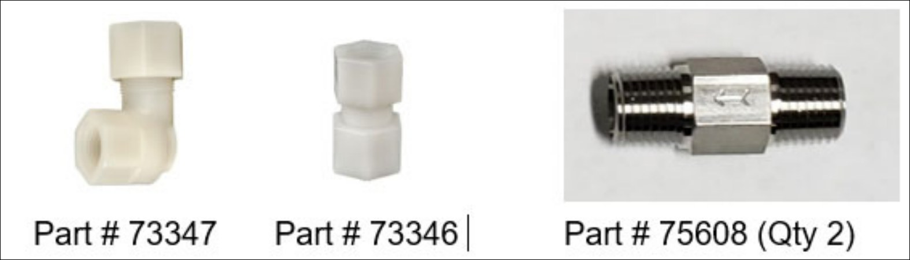

Doc no. MOC-TSB-19-06 // Vol. 19 No. 06 // Dec 30, 2019 // Fuel
New Check Valve Updates For The EDR-3 Machine Kit
73471
MOC has improved your fuel system cleaning services by introducing two (2) new check valves for the EDR-3 machines. The first of the new check valves prevents the chemicals from getting to the air regulator. The second new check valve prevents fuel from getting into the tank when checking the vehicle fuel pressure. A kit is available including the two new check valves and necessary fittings to add them to the machine. The kit is Part No. 73471. Assembly instructions are included with each kit.
What's new
Contact
For more information, contact the Machine & Equipment Department at 866.244.6621.

Part numbers
| Part No. | Description | Notes |
|---|---|---|
| 73471 | KIT, UPGRADE, CHECK VALVE, EDR-3 |